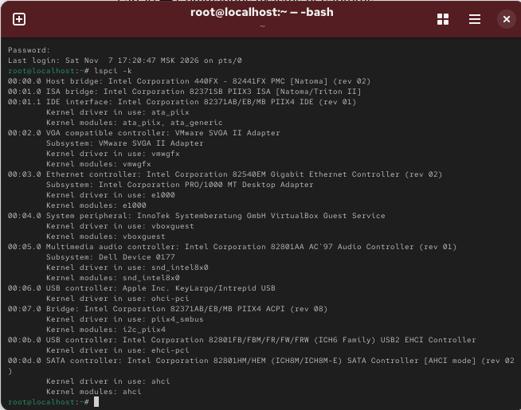
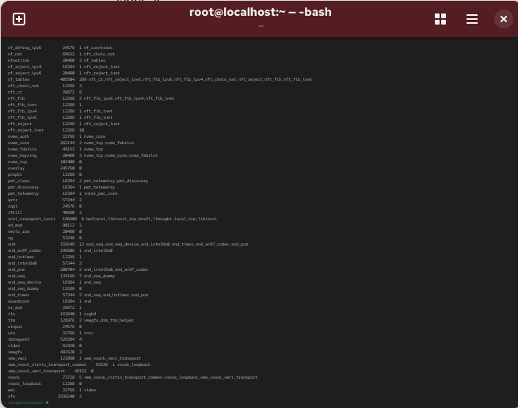
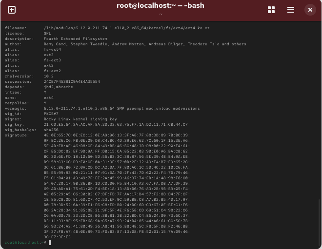
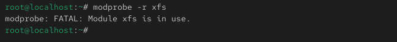
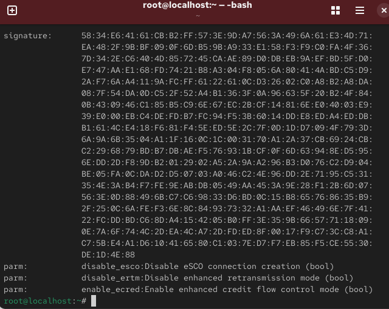
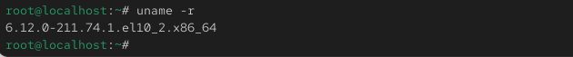
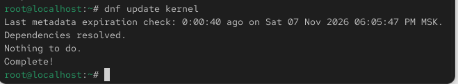
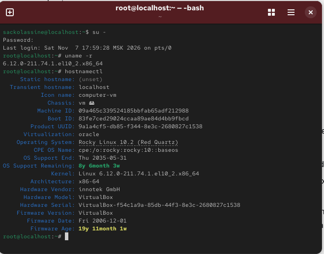

Лабораторная работа № 10
Основы работы с модулями ядра операционной системы
Цель работы
- Изучить управление модулями ядра Linux.
- Научиться загружать и выгружать модули.
- Изучить просмотр параметров модулей.
- Ознакомиться с обновлением ядра ОС.
Управление модулями ядра
Команда lspci -k позволяет определить устройства и связанные с ними модули ядра.

Просмотр загруженных модулей
Команда lsmod отображает список загруженных модулей ядра.

Работа с ext4
lsmod | grep ext4— проверка модуля.modprobe ext4— загрузка модуля.modinfo ext4— получение информации.modprobe -r ext4— выгрузка модуля.

Работа с xfs
Команда modprobe -r xfs используется для выгрузки модуля xfs.

Работа с Bluetooth
lsmod | grep bluetoothmodprobe bluetoothmodinfo bluetoothmodprobe -r bluetooth

Проверка версии ядра
Команда uname -r позволяет определить текущую версию ядра.

Обновление ядра
dnf list kerneldnf upgrade --refreshdnf update kerneldnf update

Проверка результата
После обновления и перезагрузки системы выполняется команда uname -r.

Выводы
- Изучены команды управления модулями ядра.
- Выполнены загрузка и выгрузка модулей.
- Получена информация о параметрах модулей.
- Изучены команды обновления ядра Linux.